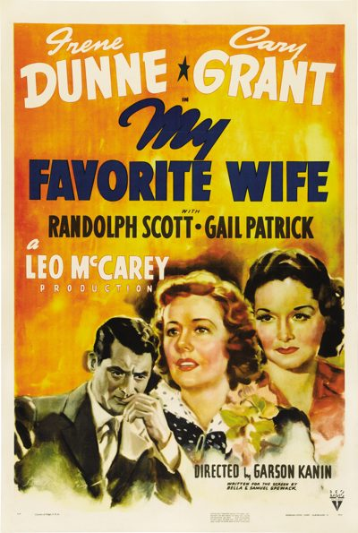

My Favorite Wife

Starring: Irene Dunne, Cary Grant, Randolph Scott
Director: Garson Kanin
Writer: Garson Kanin, Samuel Spewack, Bella Spewack
Producer: Leo McCarey
My Favorite Wife is a 1940 American screwball comedy film produced by Leo McCarey and directed by Garson Kanin. It stars Irene Dunne as a woman who, after being shipwrecked on a tropical island for several years and declared legally dead, returns to her former husband (Cary Grant) and children.
Trivia
- Nominated for: Academy Award for Best Story; Academy Award for Best Art Direction, Black and White; Academy Award for Best Original Score.
- After the great success of The Awful Truth (1937), McCarey signed Cary Grant and Irene Dunne for the film without a script.
- We couldn't—we were waiting for bulletins from the hospital." A number of pre-production conferences took place in the hospital, and McCarey recovered sufficiently to visit the set two or three weeks into filming.
- McCarey later recalled, "after about five reels, the picture took a dip, and for about two reels or more, it wasn't as funny as what preceded it ... it was a lot of unraveling of a tricky plot." A second preview confirmed that the film broke down at the same point.
Previous Showings
7 Runs • 3 Festivals
Original Billings: 1 run (July 3, 1940)
Original Run: July 3, 1940 (Wednesday - Saturday)
All runs on record (7):
- July 3, 1940 (Wednesday - Saturday)Irene Dunne, Cary Grant
- September 12 - 14, 1990w/ I Remember Mama
- August 27 - 28, 1992w/ Penny Serenade
- May 18 - 20, 1994w/ Too Many Husbands
- November 25 - 27, 1998Romantic Comedy Seriesw/ The Bishop's Wife
- April 5 - 11, 2002Cary Grant ~ The Complete Films, Part IIw/ His Girl Friday
- June 9 - 11, 2017Classic Comedy With Cary Grant, Carole Lombard, W.C. Fields and more!w/ Mr. Blandings Builds His Dream House